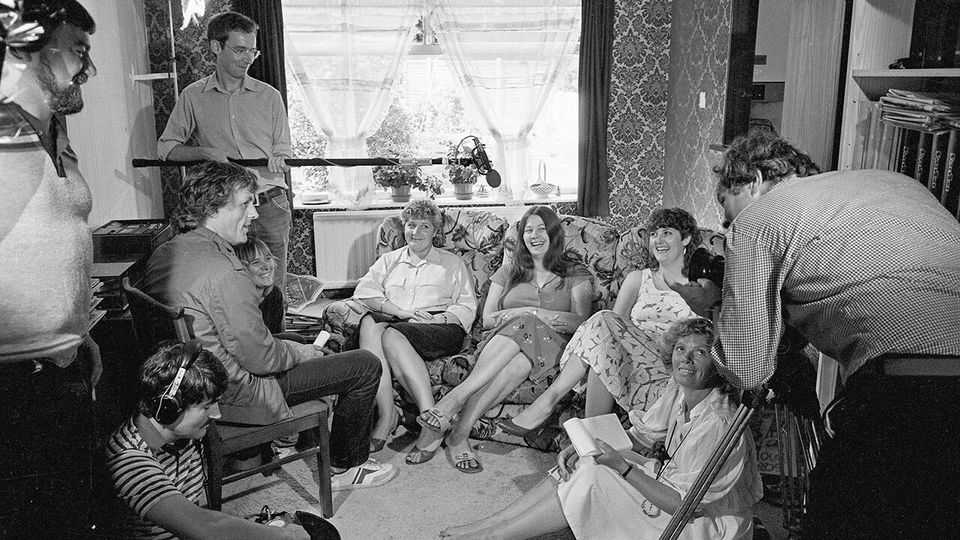

The “Up” series, an epic of ordinary life, comes to an end
A serious ancestor of reality TV

Sep 17th 2026
The plan was to make a single programme called “Seven Up!” In 1964 a clutch of seven-year-olds were filmed as they visited a zoo, had a party and mused about their future lives. That could have been that. But after a few years the film-makers decided to check in on 14 of the children, and they kept coming back. So the “Up” series was born—an epic about ordinary lives that is, in a sense, the weighty ancestor of modern reality TV.
Now the children are roughly 70 years old, and “Up” is ending. Two episodes broadcast on ITV on September 15th and 22nd will be the last. The long series has illuminated Britain wonderfully, although not in the way the film-makers expected.
It began as a study of social class. The children were plucked from contrasting backgrounds such as a private school in west London, a state school in the East End and a children’s home. They were expected to display the effects of privilege and privation, and to some extent they did. But as they became adults, the subjects messed with the programme’s tidy assumptions.
The working-class participants rejected the insinuation that their horizons were limited. “I’ve had the opportunities in life that I’ve wanted,” argued Jackie Bassett at 21. “I’m as good or even better than most of them people, especially on this programme,” said Tony Walker, who became a taxi driver.
“Up” soon settled into a series about the irreducible facts of life: adolescence, marriage, children, divorce, ageing. Lives went awry for reasons unrelated to class. Neil Hughes, a charming boy, was by age 28 itinerant and rocking himself alarmingly. “Do you ever think you’re going mad?” asked Michael Apted, who directed most of the programmes, later. “I don’t think it, I know it,” he replied.
Because there had never been a series like “Up”, the subjects were unprepared for the fame it brought. They reacted in different ways. One took the opportunity to promote his band. Others, who disliked the exposure, complained that they had been pushed into participating. In the final episode, one says he was “set up” as an upper-class bogeyman.
If the series delivers any clear message, it is about the importance of personal relationships. The subjects are saved by other people, often romantic partners but not always. Mr Hughes was brought back to society by another participant, Bruce Balden, who had said as a seven-year-old that he wanted to become a missionary and make people “good”. In an unexpected way, he got his wish.■